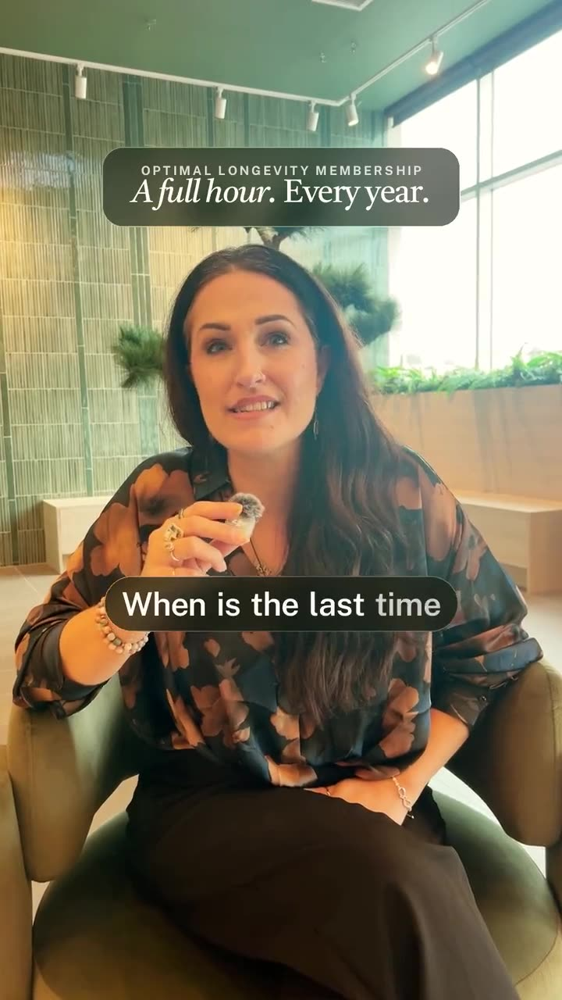
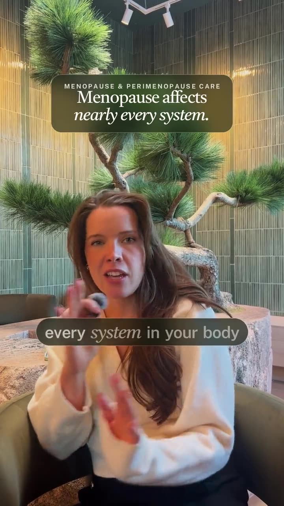
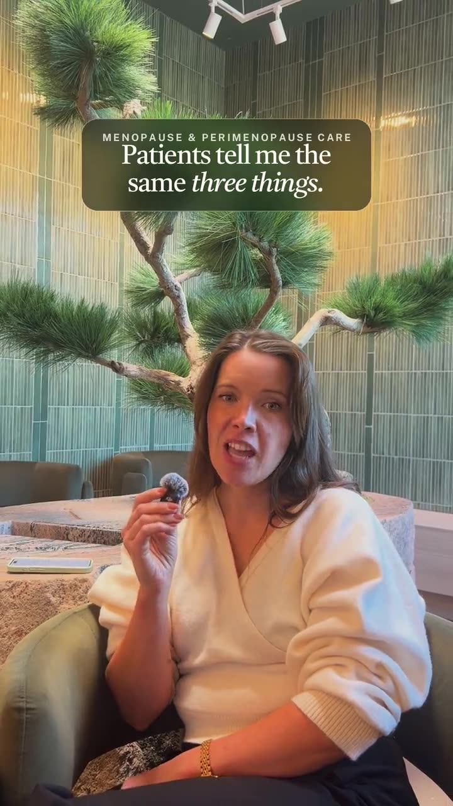
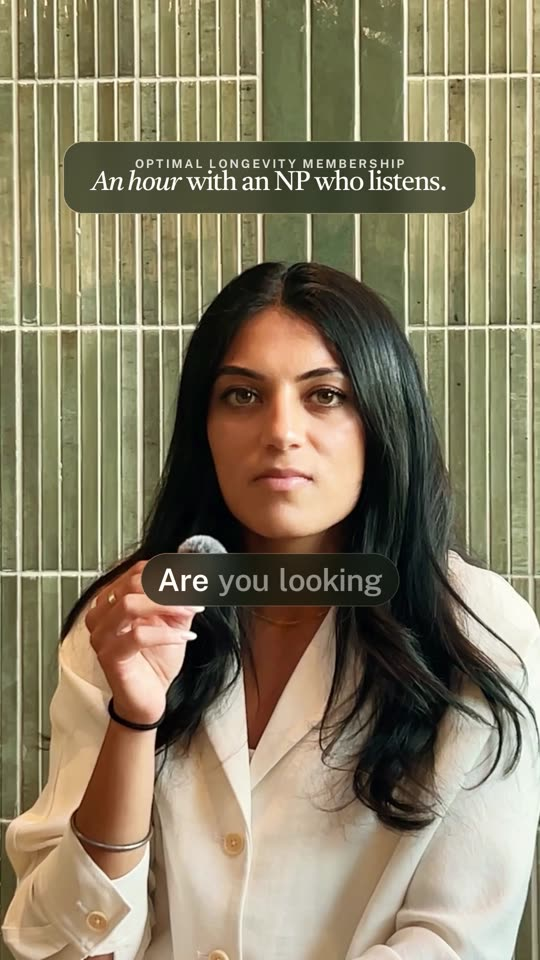
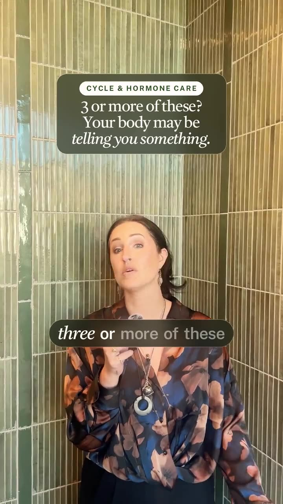
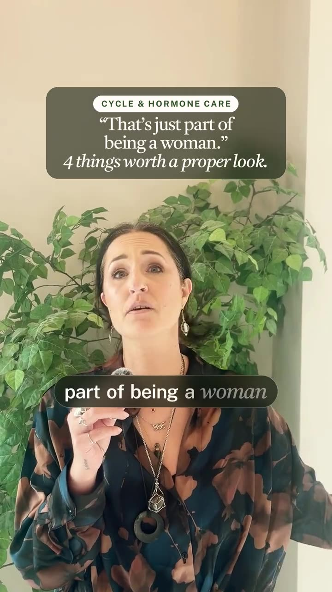
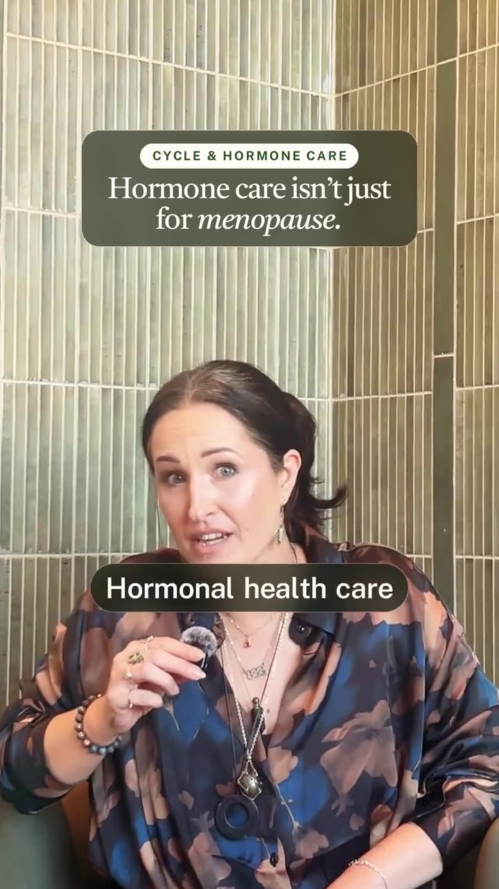

LV1-TPaid ad · also works as a post
3 things to know before you book.
Files and copy are on its ad card →

MV1-TPaid ad · also works as a post
“I just don’t feel like myself.”
Files and copy are on its ad card →

LV2-TPaid ad · also works as a post
A full hour. Every year.
Files and copy are on its ad card →

MV2-TPaid ad · also works as a post
Menopause affects nearly every system. (Tight cut)
Files and copy are on its ad card →

MV3-TPaid ad · also works as a post
Patients tell me the same three things. (Tight cut)
Files and copy are on its ad card →

LV3-TPaid ad · also works as a post
An hour with an NP who listens.
Files and copy are on its ad card →

CV1-APaid ad · also works as a post
3 or more of these?
Files and copy are on its ad card →

CV2-APaid ad · also works as a post
“That’s just part of being a woman.”
Files and copy are on its ad card →

CV3-APaid ad · also works as a post
Hormone care isn’t just for menopause.
Files and copy are on its ad card →

MA1Paid ad · also works as a post
Midlife is a stage, and stages can be planned for.
Files and copy are on its ad card →